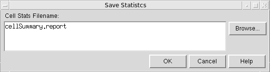

A
Abstract Generator Menu Command Reference
This appendix describes the menu commands and the associated forms in the standalone Abstract Generator.
This chapter discusses the following topics:
Form Features
File Menu
The File menu contains commands to perform the following tasks:
- Creating a Library
- Opening a Library
- Attaching Technology Information to a Library
- Importing GDSII Information
- Importing OASIS Data
- Importing LEF
- Importing DEF
- Importing Logical Data
- Importing Options File
- Exporting LEF
- Exporting a Report
- Exporting Options File
- Recording Commands and Events
- Replaying Commands
- Specifying Global Options
- Viewing the Statistics Report
- Closing Abstract Generator
Creating a Library
The File – Library – New option allows you to create a new library in the specified directory. You can create a library at any time during the abstract generation process.
Selecting File – Library – New displays the New Library window.
The fields in this window are described below.
Specifying a Path for the Library Creation
In the Library Path field, specify a valid directory path to where the new library should be created. The default value is the current directory, that is, “.”.
Click Browse to display the Browse New Library Directory form that can be used to locate the required directory location for the new library.
If no path is specified, a warning message is displayed requesting that you enter a valid directory path.
Specifying a Name for the New Library
in the Library Name field, specify a valid library name. The library name must not contain any spaces. You also cannot specify the name of an existing library that is already specified in the cds.lib file of the current directory.
After you click OK, a new library will be created at the location specified (a new library directory will be created if one does not already exist, with the same library directory name as the name of the library). The library is added to the cds.lib file and a copy of cdsDefTechLib is added to the library.
cdsDefTechLib technology library is copied into the new library to allow the import of technology LEF to create a technology file. When you are Importing LEF, you can chose to select the Overwrite option which will let you copy over the current technology.Opening a Library
You can specify the library you want to process in Abstract Generator by selecting File – Library – Open or by clicking the Library button in the toolbar.
Selecting File – Library – Open displays the Open Library window.
The Open Library window lists the libraries and their associated paths that are currently registered in Abstract Generator. These are read in from the cds.lib file located in the run directory and are listed in an alphabetical order.
cds.lib file defines the libraries that tools read to identify the libraries they can use. The file maps user library names to physical directory paths. Usually, one cds.lib file, which might reference other cds.lib files, determines the libraries that are available to your design tool. For more information about cds.lib, see the chapter “Cadence Library Definition File” in the Cadence Application Infrastructure User Guide.cds.lib file.Select the library you want to open and click OK. All the views created by Abstract Generator, including the final abstracts, are stored in this library.
The option settings from a previous Abstract Generator session are stored in your current working directory in a .abstract.options file. When you reopen the library, Abstract Generator reads in this and restores the bin options to the settings that existed when the library was last saved.
Attaching Technology Information to a Library
The File – Library – Attach Technology option allows you to attach and associate existing technology library information to the current cell library.
Selecting File – Library – Attach Technology displays the Attach Technology Library form.
This form lists all the libraries in the cds.lib file that have their own techfile.cds file contained in the library itself. The library list displayed also includes cdsDefTechLib, which is the default technology library.
cdsDefTechLib, is already attached to a cell library. If you attempt to do this, an error message will display.If you choose to attach a library, Abstract Generator attempts to combine this library to the current library and load it into the software. If you attempt to attach the same technology file that is already associated with the current library, you will be given the opportunity to reattach that technology library.
Importing GDSII Information
The File – Import – Stream (GDSII) option creates cellviews from existing layout information in GDSII format.
Choose File – Import – Stream (GDSII) to start this command or click the Layout button in the toolbar. This displays the Import Layout form.
The fields of this form are explained below.
Specifying GDSII Filenames and Their Mapping
In the GDSII Filenames field, specify the names of the GDSII files that you want to import. Use the Browse button to help you locate the files.
In the Map GDSII names cyclic field, you can specify whether you want GDSII names mapped to upper case, lower case, or to not be mapped at all.
Specifying the Layer Map File
A layer map file is an ASCII file that maps the layer numbers and data types used in the Stream file to the layer-purpose pairs in the OpenAccess database. For more information about layer map files, see Chapter 2 of the Design Data Translator’s Reference.
In the Layer Map Table field, specify the name of the layer map file you want to import. Use the Browse button to help you locate the file.
Specifying the Default Bin
In the Default Bin cyclic field, you can select the bin into which the cells are imported.
During import, Abstract Generator creates layout views for the cells in the library. Some types of cells, such as sites and generated vias, do not need to be processed, so Abstract Generator moves them directly into the Ignore bin. A cell is placed in the Default Bin only if it meets the criteria below.
After importing, if you select the Default Bin in the main window, you see the imported cells listed in the right-hand pane. The check mark in the Layout column indicates the presence of a layout view. Cells are also checked for valid layers.
Specifying the Template Files
In the Template Filename field, specify a stream template file to be imported into Abstract Generator. Use the Browse button to help you locate template files.
If you do not select a template file, Abstract Generator creates a default file called PcsStreamIn.template in the .abstract/import directory. This file has default option settings of No Mapping and Core bin and can be used to create your own template file.
For more information about the contents of the template file and stream translation in general, see Chapter 2 of the Design Data Translator’s Reference.
Specifying the Reference Technology Libraries
The subsection techControl, added to the technology file for ITDB (Incremental Technology Database) support, necessitates the specification of a set of ordered reference libraries to allow inheritance from these libraries.
Abstract Generator allows you to specify one or more valid reference technology libraries in the Technology reference library name field. The specified referenced technology libraries must be present in the cds.lib file and must be readable.
Enabling Coloring While Importing GDSII Information (ICADVM20.1 Only)
Use the ImportGDSIIEnableColoring to specify whether coloring needs to be enabled while importing GDSII data. By default, the option is set to "true".
absSetOption("ImportGDSIIEnableColoring" "true")
ImportGDSIIEnableColoring option to "true", ensure that layer map file includes mask information.Importing OASIS Data
The File – Import – Stream (Oasis) option creates cellviews from existing layout information in OASIS format. Choose File – Import – Stream (Oasis) to start this command. This displays the Import Oasis form.
The fields of this form are explained below.
Specifying OASIS Filenames and Their Mapping
In the Oasis Filenames field, specify the names of the OASIS files that you want to import. Use the Browse button to help you locate the files.
In the Map Oasis names cyclic field, you can specify whether you want OASIS names mapped to uppercase, lowercase, or not to be mapped at all.
Specifying the Layer Map File
A layer map file is an ASCII file that maps the layer numbers and data types used in the Stream file to the layer-purpose pairs in the OpenAccess database. For more information about layer map files, see Chapter 2 of the Design Data Translator’s Reference.
In the Layer Map Table field, specify the name of the layer map file you want to import. Use the Browse button to help you locate the file.
Specifying the Default Bin
In the Default Bin cyclic field, you can select the bin into which the cells are imported.
During import, Abstract Generator creates layout views for the cells in the library. Some types of cells, such as sites and generated vias, do not need to be processed, so Abstract Generator moves them directly into the Ignore bin. A cell is placed in the Default Bin only if it meets the criteria below.
After importing, if you select the Default Bin in the main window, you see the imported cells listed in the right-hand pane. The check mark in the Layout column indicates the presence of a layout view. Cells are also checked for valid layers.
Specifying the Template Files
In the Template Filename field, specify a stream template file to be imported into Abstract Generator. Use the Browse button to help you locate template files.
If you do not select a template file, Abstract Generator creates a default file called PcsStreamIn.template in the .abstract/import directory. This file has default option settings of No Mapping and Core bin and can be used to create your own template file.
For more information about the contents of the template file and stream translation in general, see Chapter 2 of the Design Data Translator’s Reference.
Specifying the Reference Technology Libraries
The subsection techControl, added to the technology file for ITDB (Incremental Technology Database) support, necessitates the specification of a set of ordered reference libraries to allow inheritance from these libraries.
Abstract Generator allows you to specify one or more valid reference technology libraries in the Technology reference library name field. The specified referenced technology libraries must be present in the cds.lib file and must be readable.
Importing LEF
The File – Import – LEF option creates cellviews from LEF data. This option is likely to be used when creating blocks from DEF. The LEF data for the leaf cells should be imported, followed by the DEF data for the associated block.
Selecting File – Import – LEF displays the Import LEF form.
The fields of this form are explained below.
Specifying the LEF Files
The LEF Filenames field specifies the LEF files to import. You can type the name manually in the field or Browse for existing files with the .lef extension in the current directory.
Specifying a Cellview for Importing the LEF Files
The View field specifies the cellview to which a LEF macro will be saved. The default view is abstract but this can be changed so that the LEF macro is saved to another view, such as the layout view.
Specifying the Reference Technology Libraries
The subsection techControl, added to the technology file for incremental technology database support, necessitates the specification of a set of ordered reference libraries to allow inheritance from these libraries. For more information about incremental technology databases, see the Virtuoso Technology Data User Guide.
Abstract Generator allows you to specify one or more valid reference technology libraries in the Technology reference library name field. The specified referenced technology libraries must be present in the cds.lib file and must be readable.
Overwriting the Existing Technology File
Selecting the Overwrite option enables Abstract Generator to overwrite the current technology file if the LEF file to be imported contains one. This option is off by default.
All kinds of LEF files can be imported, ones with both technology and geometry information and also the ones with only technology or only geometry information.
cdsDefTechLib, is already attached to a cell library. If you attempt to do this, an error message will display.Defining the Library Name
In the Library Name field, specify the name of the LEF library that needs to be imported.
The library and its associated technology file are loaded into the current abstract session. At this point, the corresponding GDS file, if available, will also be read.
When specifying the Library Name:
- If a library is already loaded in the current abstract session, then the name of the currently open library is displayed in the Library Name field. Either retain the same library name or specify a different value.
- If you have created a new library, then the name of the newly created library is displayed in the Library Name field. Either retain the same library name or specify a different value.
- If no library is currently loaded in AG, and user wants to create new library using the Import LEF form, then it is mandatory to specify the library name along with the LEF file name. Else an error message is displayed and the Import LEF operation fails.
- When you click OK, Abstract Generator opens the specified library. So, if you specify a library name other than the currently loaded library, then the newly created library is loaded.
Alternatively use option LEFLibraryName.
Importing DEF
The File – Import – DEF command imports a netlist in DEF format and updates the design with the information.
A DEF file contains the design-specific information of a circuit and is a representation of the design at any point during the layout process. The DEF file is in ASCII format.
DEF conveys logical design data to and physical design data from P&R tools. Logical design data can include internal connectivity (represented by a netlist), grouping information, timing parameters and physical constraints. Physical data includes placement locations and orientations, routing geometry data, and logical design changes for backannotation.
Selecting File – Import – DEF displays the Import DEF form.
Specifying the DEF Files
The DEF Specifies the DEF files to import. You can type in the name manually or Browse for existing files with the .def extension in the current directory.
Specifying the Default Bin
In the Default Bin cyclic field, select the bin to which DEF data is to be imported.
Cells will be placed in the Default Bin only if they conform to the following criteria:
If any of this criteria is not met, the cells will be placed in the Ignore bin.
Creating an Abstract from a DEF Block
Abstract Generator can be used to generate abstracts and process antenna information for routed blocks.
Step 1: Import
-
Use the File – Import – LEF option to import your LEF file.
- Select File – Import – DEF and import your DEF file.
Step 2: Run Pins Step
Assuming that the DEF file contains pins for VSS/VDD, with no geometry, you should now do the following:
- Run the Pins step.
- In the Extract step (Power tab) leave the Extract power nets option off.
- In the Abstract step (Adjust tab) select the style of power pins that you want to create, for example, boundary or pin.
This solution should work irrespective of the standard cells inside the block having feedthru or abutment pins and no matter what style of power pin you select for the block itself.
If the DEF file does not contain power pin statements for VSS/VDD, add these statements to the DEF file pins section, as shown below:
VSS + NET VSS + DIRECTION INOUT + USE GROUND
VDD + NET VDD + DIRECTION INOUT + USE POWER
Step 3: Run Extract Step
When calculating the process antenna effect (PAE), it will be necessary to run do_extraction.
The recommended way of doing this is to leave the Extract signal nets option off, select all the appropriate antenna calculation buttons on the Antenna tab, and list the polysilicon, contact and diffusion layers in the Layer Assignment for Extraction table.
DIFF, CONT, or POLY layers in the extraction.
With this set-up, Abstract Generator will do_extraction to generate the PAE data but will not create any new pins. The pin geometry would essentially be the same as defined in the DEF pins section.
Step 4: Run Abstract Step
In the DEF flow, where each pin in the DEF file contained geometry, it is recommended to turn the Create boundary pins option off.
For Power Nets, if the power pin geometry was defined in the DEF file, it is likely that this is the desired pin geometry in the abstract. In this case, it is recommended that both Create boundary pins and Create ring pins options be turned off.
However, if the DEF file contains no geometric pin shape, you should select the Create boundary pins option for Signal Nets and Create boundary pins or Create ring pins option for Power Nets.
Importing Logical Data
The File – Import – Logical command creates cellviews from existing logical information, typically represented in Liberty or Verilog® formats.
Select File – Import – Logical or click the Logical button in the toolbar. This displays the Import Logical form.
Specifying the Logical Data Files
In the Logical Filenames field, specify the names of one or more files you want to import, or use the Browse button to help locate the file and add it to the selection.
Specifying the File Type
You can filter the search by using the Filetype list. Choose the required file format, and then click OK to import the selected file.
Abstract Generator creates cells with logical views in the current library directory. If the cell already exists, Abstract Generator does not create a new cell but adds logical view information to the other views present for the cell.
If you import logical information after you have run the Pins step, Abstract Generator confirms that the layout and logical views match before extracting terminal properties from the logical view.
Cells that have only a logical view go to the Ignore bin by default.
schematic or symbol view. For more information, see Specifying Global Options.Importing Options File
The File – Import – Options command allows you to load an options file saved in a previous session. You can save the settings of a session and load these settings back when you start a new session using the Import command.
Choose File – Import – Options to display the Import Options form.
In the Options Filename field, specify the path and name of the file to import, or use Browse to look for the file through various folders.
Click OK to import the options file from the specified location.
Exporting LEF
The File – Export – LEF command generates LEF descriptions for cells in one or more bins.
Selecting File – Export – LEF displays the Export LEF form.
The fields of this form are explained below:
Specifying the LEF File
In the LEF Filename field, specify a path and name for the LEF file to export or use the Browse button to specify a location.
Specifying the LEF Data to be Exported
Use the Export Geometry LEF Data and Export Tech LEF Data options to choose the combination of geometry LEF and technology LEF to be exported. All the LEF information is written to the specified LEF Filename. The following examples show the variants of LEF data that can be exported from Abstract Generator:
Geometry LEF data
PIN A
DIRECTION INPUT ;
PORT
LAYER METAL1 ;
RECT 0.715 1.845 1.105 2.490 ;
END
END A
Tech LEF data
LAYER METAL1
TYPE ROUTING ;
DIRECTION HORIZONTAL ;
PITCH 0.56 ;
WIDTH 0.23 ;
SPACING 0.23 ;
RESISTANCE RPERSQ 0 ;
CAPACITANCE CPERSQDIST 0 ;
THICKNESS 0.1 ;
ANTENNALENGTHFACTOR 0.00208 ;
CURRENTDEN 0 ;
END METAL1
Specifying the Cells to be Exported
Use the Cell List Filename field to export LEF information for only the specified cells. The list of cells, whose LEF information is to be exported, is specified in a cell list file, with one cell name per line. Specify the name of this cell list file in the field or use Browse to specify the file’s location. This is an optional field. For related messages, see ABS-16103 and ABS-16104.
If you specify a cell list file, the Export LEF for Bin option gets disabled.
Specifying the LEF Version
Using the LEF Version cyclic field, select the version of LEF that you want to export.
Specifying the Default Bin for the LEF Data to be Exported
In the Export LEF for Bin cyclic field, select the bins for which you want to export the LEF data. You can export LEF for all the cells in your library or on a bin-by-bin basis.
Specifying the Bus and Divider Characters
Using the Bus characters and Divider character cyclic fields, select the characters you want to use to represent buses (< > or [ ]) and pseudohierarchy ( / or | ), respectively, in your LEF.
Click OK to export the LEF files. The resultant LEF file can be imported into the target P&R system.
Including DATABASE MICRONS in the Exported LEF
To set DATABASE MICRONS values in the LEF information exported from the CDB Abstract Generator, you must set the gec3DBUPerUU value in your CDB technology file. For more information about how to set the DATABASE MICRONS values, see Setting DATABASE MICRONS in the Exported LEF.
DATABASE MICRONS value is taken directly from the DBUPerUU value defined in the technology file.Exporting a Report
The report function outputs a summary of the cells in your library. It contains statistical information about the whole library, such as the number of cells by type and the number of cells with errors or warnings, and more detailed information about each of the individual cells.
Choose File – Export – Report to start this command. This displays the Export Report form.
In the Report Filename field, specify a path and name for the file to be exported, or use the Browse function to help you specify the location. Click OK to export the report to the specified file location.
- General information about the tool version
- Date and time the report was generated
- Details of the number of errors and warnings generated during the current session
- Total number of cells by type
- Number of cells with errors or warnings
- Number of cells with valid logical views but no layout views
Exporting Options File
The File – Export – Options command saves the export option settings for the current session.
Choose File – Export – Options to display the Export Options form.
In the Options Filename field, specify a path and name for the file, or use the Browse function to help you specify the location.
The options file records settings for both global and bin options as well as default settings for various other commands. You can use the options file to import these settings the next time you use Abstract Generator, or to restore them later in the current session after completing any experiments with alternative settings.
Click OK to export the options to the specified location.
Recording Commands and Events
The Record option controls the behavior of the record file, abstract.record.
Choose File – Record to start this command. This displays the Record form.
Use the Record form to change the name of the record file, change the way the file is updated, or switch off recording altogether.
In the Record File field, specify the name of the record file. Use the Browse function to help you locate an existing file or change the current directory. If you do not change the name of the record file, it will be overwritten during the next Abstract Generator session.
Use the Mode pull-down list to select whether the commands of this session should overwrite or be appended to the record file or switch off the record function.
By default, abstract.record is the name of the record file. If a file with that name already exists, the existing file is renamed to abstract.record.n where n is equal to 1, and the new record file is named abstract.record.
If the name of the record file is not changed in subsequent sessions, the abstract.record file is renamed to abstract.record.(n+1) to maintain the older versions of the record file. Therefore, the greater the numeric value in the record file name, the recent (latest) that file is.
For example, if the file name is not changed in three successive sessions, the following record files are created:
Therefore, the abstract.record file is always the current record file. The other files with a numeric suffix are backups of previous record files.
Replaying Commands
Every operation you perform during a session is recorded in a .record file. This allows you to rerun any session in batch mode and create user-defined macros with a minimum of manual intervention. This file can then be replayed in either GUI or non-GUI mode.
Choose File – Replay to start this command. This displays the Replay form.
Specify the name of the file to be replayed in the Replay Files field. Use the Browse function to help you locate it if required.
Click OK to replay the session described in the file.
The contents of a sample replay file are shown below.
absSkillMode()
absSetLibrary(“amsPLL”)
absSelectCellFrom(“pllclk25” “pllclk25”)
absSetBinOption(“Block” “PinsTextPinMap” “(Metal1 Metal1)(Metal2 Metal2)(Metal3 Metal3)(Metal4 Metal4)”)
absAbstract()
absSetOption(“ExportLEFVersion” “5.5”)
absExportLEF()
absExit()
Specifying Global Options
The File – General Options command displays the General Options form that lets you view and change options that apply to the overall Abstract Generator. The options are split into different categories, accessed using the Views and General tabs in the General Options form.
General Tab
The General tab provides the options to set the default bin, LEF version, and the purpose name(s) to be ignored during the flow steps.
Constraint group
Specifies the name of the constraint group of the technology database. Abstract Generator works with the specified constraint group and derives the required information, such as the valid vias and valid routing layers, only from that constraint group. By default, the Constraint group field is empty. You can specify the constraint group name in the Constraint group field. If you have specified a constraint group name, then Abstract Generator will search for the rules in the specified constraint group. If the rules are not found in the specified constraint group, Abstract Generator displays an error. However, if constraint group name is not specified, Abstract Generator will search for the rules in the constraint group of type LefDefaultRouteSpec. If the constraint group of type LefDefaultRouteSpec is not found, then Abstract Generator will search for the rules in the constraint group named LefDefaultRouteSpec. If the rules are not found in either the constraint group of type LefDefaultRouteSpec or in the constraint group named LefDefaultRouteSpec, Abstract Generator displays an error.
Pin purpose name
Sets the purpose for pins on the final abstracts. The default purpose is net.
Default Bin
Specifies the default bin into which library cells are imported.
Cells will only be placed in the Default Bin if they conform to the following criteria:
If any of these criteria are not met, the cells will be placed in the Ignore bin.
LEF Version
Sets the version of LEF to be used by Abstract Generator. You can select from 5.4, 5.5, 5.6, and 5.7. The default version of LEF used by Abstract Generator is 5.7 for mature nodes and 5.8 for advanced nodes.
Ignored Purpose(s)
Allows you to specify the purpose name(s) that you want to be ignored when a layer name without a qualifying purpose name is specified for the following options in the Pin, Extract, and Abstract steps:
-
Pins step:
- Map tab: Map text labels to pins field
- Boundary tab: Using geometry on layers field
-
Extract step:
- Signal tab: Geometry Specification column in the Layer Assignment for Signal Extraction table
- Power tab: Geometry Specification column in the Layer Assignment for Power Extraction table
- Antenna tab: Geometry Specification column in the Layer Assignment for Antenna Extraction table
-
Abstract step:
- Adjust tab: Geometry Specification column in the Layer Assignment for Pin Geometry table
- Blockage tab: Geometry Specification column in the Layer Assignment for Blockages table
- Overlap tab: Using geometry on layers field
Abstract Generator allows you to include the shapes on the ignored purpose(s) during the Pin, Extract, and Abstract steps if you explicitly mention the layer and the purpose names in the geometry specification at the appropriate locations in the flow steps.
By default, this option is prepopulated with the purpose name boundary, so that the boundary purpose is ignored by default in all the flow steps.
Abstract Generator allows you to include the shapes on the ignored purposes during the Pin, Extract, and Abstract steps if you explicitly mention the layer and the purpose names in the option value in the various steps. For example, if you specify the purpose to be ignored as "boundary", a geometry specification containing the layerName "M1" would include all shapes on layer "M1" and exclude those on purpose "boundary". To include the shapes on the ignored purpose "boundary", you will need to change the geometry specification to "M1 or M1 boundary".
Show Bubble Help
Displays bubble help for various GUI options. It is selected by default. You can turn it off if required.
Copy Routing Constraints from layout
Enables Abstract Generator to copy the mixed signal routing constraints from the layout view to the abstract view.
Views Tab
Use this tab to specify the file names that Abstract Generator would use while creating layout, logical, and abstract database files. The Logical file name field can also be used to specify an existing logical view (for example, schematic or symbol) from which logical information is to be picked up.
Layout View Name
Specifies the view name for layout information.
For example, if you import GDSII layout data into Abstract Generator, this is the name used for the database files that are generated.
Logical View Name
Specifies the view name for logical information.
For example, if you import Verilog information into Abstract Generator, this is the name used for the database files that are generated.
You can also use this field to specify the name of an existing view containing logical information (for example, schematic or symbol). Abstract Generator automatically picks up logical information from the specified file.
schematic or symbol in this field, you cannot then import Verilog data using the Import Logical form. The entry in this field must be compatible with the type of data that is subsequently imported.Abstract View Name
Specifies the name used for the abstract views created by Abstract Generator.
Viewing the Statistics Report
At any point during the Abstract Generator run, choose File – Statistics Report to see a report window that displays the abstract generation status and statistics until that point. A separate Statistics Report is displayed for each selected cell. The report provides the following information about the abstract generation run on each cell:
The < and > buttons are useful when multiple cells are selected for abstract generation. Use these buttons to navigate between reports for the various cells. A new statistics report is generated for each Abstract Generator run.
-
Click Save As. The Save Statistics window is displayed.
 -
Specify a different Cell Stats Filename. The default filename is
cellSummary.report. To select an existing file, click Browse and select the required file. - Click OK.
The statistics report is stored in the text format.
Closing Abstract Generator
The File – Exit option closes Abstract Generator.
Bins Menu
The Bins menu contains commands to perform the following tasks:
Adding a User Bin
The Bins – Add option adds a new user bin to the list of existing bins.
In the Add User Bin form, type the name of the new bin in the Enter bin name field. The bin name should contain any spaces.
In the Choose bin type cyclic field, select a bin from the drop-down list. The bin type determines the default options settings for the new bin. Therefore, for example, if you create a new user bin of type Core, the user bin options will be identical to those currently set for the default Core bin.
When you click OK, Abstract Generator creates the new bin and displays it at the bottom of the list in the Bins pane.
Renaming a User Bin
The Bins – Rename option changes the name of the selected user bin.
In the Enter new bin name field in the Rename User Bin form, type the new name for the selected user bin and click OK to accept the change.
Deleting a User Bin
Select the bin you do not need and want to delete, and choose Bins – Delete and confirm the deletion.
If the bin you are deleting is not empty, you will be prompted (the Delete User Bin form will be displayed) to specify where to put its cells before the bin is deleted.
The name of the selected user bin will display in the Delete bin field. In the Move its cell to list box, select the bin to which you want the cells of the deleted bin to be moved and click OK. The cells are moved and the user bin is deleted.
Setting Bin Options
The Bin Options form allows you to view and change the options associated with system and user bins. These options control the way in which Abstract Generator processes the cells contained in any given bin.
Choose Bins – Options to display the Bin Options form.
When you run flow steps on selected cells, you see a modified version of the Bin Options form, which lets you view and change options relevant to the steps about to be run.
The Bin Options form comprises the following:
Bin Selector
The option settings are applied to the bin specified in the panel on the left of the form.
If there is a bin selected when you open the form, it will be selected here with the option settings for that bin displayed. If there are multiple bins selected, the first bin in the list is selected. You can view and change the options associated with any other bin by clicking the button next to the bin name.
Step Selector
The abstract generation flow is split into four steps: Pins, Extract, and Abstract. You access the options associated with each step using the step selector in the top left of the Bins Options form.
When you open the Bin Options form, the default selection is Pins. Use the buttons to view and modify options associated with the other steps.
Tabs
The options associated with each flow step are further grouped into logical categories, accessed by clicking the appropriate tab at the top.
Input Fields
When setting options, consider the following rules:
Buttons
In addition to the OK, Cancel, and Help buttons that are commonly present on other Abstract Generator forms, the Bins Options form has the Copy From Bin button.
Use the Copy From Bin button to copy option settings from another bin to the selected bin. This is useful when creating a new user bin; you can selectively copy bin specific options only while copying options from one bin to another.
Clicking the Copy From Bin button displays the Copy Bin Options form.
In the From field, select the bin whose options you want to copy and click OK. For example, the settings for the Core bin could be copied to UserBin. The current bin is entered automatically in the To field.
This function overwrites all the current option settings for the target bin.
The following table lists the options that are disabled for specific bins and are to be excluded from that bin. This means that the options listed under a particular bin will be excluded while copying options from other bin to this bin and vice-versa.
Cells Menu
The Cells menu contains commands to perform the following tasks:
- Selecting Cells Based on a Criteria
- Selecting All Cells
- Deselecting All Cells
- Selecting Cells with Invalid Views
- Sorting Cells
- Distributing Cells into Bins
- Moving Cells Across Bins
- Viewing and Editing Cell Properties
- Viewing and Editing Cell Terminal Properties
- Viewing Cell Status Report
- Editing Cellviews in Virtuoso Layout Editor
Selecting Cells Based on a Criteria
The Cells – Select command selects one or more cells using a variety of selection criteria.
Choose Cells – Select to start this command. This displays the Select Cells form.
Using this form, you can specify criteria based on any of the following parameters:
Click OK to select the cells matching the criteria and close the form, or use the Apply button to perform incremental selection without closing the form.
Selecting All Cells
The Cells – Select All command selects all cells displayed in the Cell pane. Clicking the table header of the Cell pane also selects all the cells.
Deselecting All Cells
When you click Cells – Deselect All, no cell in the cells pane is selected.
Selecting Cells with Invalid Views
The Cells – Revalidate Selected command revalidates all invalid views for the cells selected in the Cell pane.
Abstract Generator invalidates a view if the view is out of date. It then turns the symbol gray for that view in the Cell pane. Abstract Generator does not allow you to proceed with the abstraction flow until you run the step again to create that view.
A view might become invalid in any of the following situations:
- The technology file is changed after the view was created.
- The preceding view in the flow has a newer timestamp.
- Abstract options for the step have changed after the view was created.
- The cell is moved to another bin.
In these situations, Abstract Generator, by default, invalidates the view to enforce consistency between the techfile, changed cellviews, and options. This helps the inexperienced user. However, in some cases this is overly restrictive for experienced users. The Revalidate Selected option provides the override functionality to these experienced users.
The need for using the Revalidate Selected option arises from the situation in which you might want to process the cells in a single bin with slightly different options. To do this without the Revalidate Selected option, you would need to create a user bin for each cell, move cells to the different user bins and then process the abstract for each bin. With the Revalidate Selected option, you can retain the cells in a single bin, modify the options for them, and process the abstract as required before revalidating views.
For information about the symbols denoting cell status, see Viewing Status Information.
Sorting Cells
The Cells – Sort command sorts the selected cells according to a variety of sorting criteria. The specified criteria are applied only to the selected cells displayed in the Cell pane and not to the overall library.
Selecting Cells – Sort command displays the Sort Cells form.
The form options are described below.
Selecting the Criterion for Sorting
Select from None, Name, Height, Status, or Selection:
- Name sorts the selected cell list alphabetically by cell name.
- Height sorts the selected cell list according to the heights of the cells in the specified View.
- Status sorts the selected cells according to the status of the View specified, listing cells in a sequence: unknown, warning, error, and invalid.
- Selection moves all the selected cells to the top of the cell table.
Selecting a View for Sorting
Select from Layout, Logical, Pins, Extract, or Abstract.
The Height and Status methods consider only the view specified here. Cells that do not have the specified view are not sorted.
Selecting the Order of Sorting
Select Ascending or Descending.
When you have specified your criteria, click OK to sort the cells.
Distributing Cells into Bins
The Cells – Distribute command distributes cells among the system and user bins according to cell height, name or type.
Selecting Cells – Distribute displays the Distribute Cells Among Bins form.
The Method group options allow you to specify the criteria you want to use. Choose from Height, Name and Type. In the Cells group, select whether you want to distribute All the cells currently displayed in the Cell pane or limit the operation to the set of cells Selected when you opened the form.
Distributing Cells Based on Height
Selecting the Height method changes the lower part of the form to display the following:
You can specify a series of height ranges in μ, and the bins to which cells falling within a particular range are to be moved.
To ensure that no cells are missed, only the lower bound of each range is editable. When you change the lower bound of one range, the upper bound of the next range down is adjusted automatically.
When you are satisfied with the height ranges, click OK to distribute the cells.
Distributing Cells Based on Name
Selecting the Name method changes the lower part of the form to display the following:
You can specify strings of characters and target bins for cell names containing those strings.
For example, the settings shown above would move all the cells with names that include the string block to the Block bin, those including the string io to the IO bin, and so on.
Distributing Cells Based on Type
Selecting the Type method changes the lower part of the form to display the following:
Using this form, you can distribute the cells to other system and user bins. The Type method distribution is based on the CellType attribute of a layout cell on OpenAccess.
The first column represents the CellType attribute. By default, the CellType attributes in the first column are mapped to the corresponding system bins in the second column. The choices in the second column corresponding to a specific type are restricted to the user-defined and system bins of the same type. For example, if myBin is a user-defined bin of the type Block, myBin would be available for selection with the Block system bin in the second column. For cellviews with an unknown CellType (Other), all system and user-defined bins come up as options in the Ignore cyclic list.
Moving Cells Across Bins
The Cells – Move command moves one or more selected cells to a different bin.
In the Cell pane, select the cells you want to move either manually or by using Cells – Select, then choose Cells – Move. This displays the Move Selected Cells form.
Choose the target bin and click OK. The selected cells are moved into the selected bin. The status for all the views remains unchanged.
Viewing and Editing Cell Properties
Selecting Cells – Cell Properties displays the Cell Properties form that lets you view and change the properties on cells. Select Cells – Cell Properties after selecting one or more cells in the Cell pane.
The selected cells are listed in the Cell Properties form. Also listed is the bin in which the cell is stored and the current settings for the prCellClass and symmetry properties. You can select more than one cell by using the usual Shift and Ctrl key bindings.
To change a property of a cell, perform the following steps:
-
Select one or more cells in the list and use the Change property cyclic field to select the property you want to change.
This changes the Allowed Values in the second cyclic field. - Select the new value for the selected cells.
- Click Apply to update the form. This will not update the database.
- Click OK to accept all your changes and close the form.
Allowed Values
prCellClass
The allowed values for the prCellClass property depend on the bin in which the cell resides. The table below shows the allowed prCellClass entries and the corresponding LEF descriptions for each bin.
| Bin | Value | LEF |
|---|---|---|
symmetry
Specifies the symmetry for the selected cells.
Viewing and Editing Cell Terminal Properties
The Cells – Terminal Properties command displays the Terminal Properties form that lets you edit terminal properties for the cells in your library. Select Cells – Terminal Properties after selecting one or more cells in the Cell pane.
Abstract Generator assigns the properties to the terminals in the database. If the logical information already contains these properties on terminals, Abstract Generator displays them in the Terminal Properties form and propagates them through various Abstract Generator views.
This form works in the same way as the Cell Properties form. The table contains an entry for each terminal (Terminal column) defined for each of the selected cells (Cell column) selected in the Cell pane.
To change a terminal property of a cell, perform the following steps:
-
Select one or more terminals from the list and use the Change property cyclic field to select the property you want to change.
This changes the Allowed Values in the second cyclic field. - Select the new value for the selected cells.
- Click Apply to make the change. This updates the form but not the database.
- Click OK to accept all your changes and close the form.
Allowed Values
| Field | Allowed Values |
|
Specify a valid terminal net expression in the following format: To remove a net expression, select the terminal, click the netExpr column header and clear the field at the top of the form. For information about creating and editing net expressions, see Chapter 2, “Understanding Connectivity and Naming Conventions” in the Virtuoso Schematic Editor L User Guide. |
|
|
For more information about setting this property, see Support for Inherited Connections in Abstract Generator. |
|
|
For more information about setting this property, see Support for Inherited Connections in Abstract Generator. |
Support for Inherited Connections in Abstract Generator
Abstract Generator provides support to inherited connections for managing multiple power and voltage supplies in designs through the properties netExpr, suppSensitivity, and groundSensitivity.
To set the supply sensitivity for a signal pin, the cell that contains the signal pin must have more than one power terminal. Similarly, to set the ground sensitivity for a signal pin, the cell containing the signal pin must have more than one ground terminal.
The value of the suppSensitivity property is displayed in the view of the current step only when you set the value after running the step. For example, if you want to see the property in Pins view, you must set its value after running the Pins step. To get information about the supply sensitivity in a LEF file, you must set its value after running the Abstract step and then export the LEF file.
The Terminal Properties form displays all power and ground terminals of the cells selected in the Cell pane. You can select single or multiple signal pins on the same or different cells to set their supply or ground sensitivities. The property value will be updated on a signal pin only if all of the following criteria hold true:
- The cell with the signal pin has more than one power (for setting supply sensitivity) or ground (for setting ground sensitivity) terminal.
- The value to set is a power (for setting supply sensitivity) or ground (for setting ground sensitivity) terminal on the cell with the signal pin.
If either of these conditions is not met, Abstract Generator will issue an appropriate warning message when you click Apply.
Example
Consider a situation in which CellA and CellB have the following power, ground, and signal terminals:
| Cell | Terminal | termType |
|---|---|---|
In this situation, Abstract Generator populates the values VDD and PWR for the suppSensitivity property and the values VSS and GND for the groundSensitivity property.
Notice that CellA contains only one power and one ground terminal. So, it is not feasible to update the supply or ground sensitivity for the signal pins on this cell. CellB contains more than one power and ground terminals. To set the supply sensitivity on a signal pin of this cell, you can choose one of VDD or PWR. Similarly, to set the ground sensitivity on a signal pin of this cell, you can choose one of VSS or GND.
The following table summarizes the values that can be set for the suppSensitivity and groundSensitivity properties for the signal pins on CellA and CellB.
| Cell | Terminal | termType | suppSensitivity | groundSensitivity |
|---|---|---|---|---|
‘X’ indicates that values cannot be set for suppSensitivity and groundSensitivity properties.
Viewing Cell Status Report
The Cells – Report command opens a report window to display the status of the selected cells.
The cell report provides detailed information about the status of a cell, with explanations of any messages generated for the different views present. Only views that have a valid status are reported.
If more than one cells is selected, the arrow buttons allow you to move back and forward through the selected set.
Editing Cellviews in Virtuoso Layout Editor
You can select Cells – Edit – Layout to view and edit any cellview that exists for a selected cell. When you do this, Abstract Generator invokes Virtuoso® Layout Suite L Editor.
You can choose to view and edit the following cellviews: Layout, Pins, Extract, and Abstract. You cannot edit a selected cell that does not have an available view or the view is invalid. Moreover, if a view is set to be read-only, the Layout Editor will also only be available in read-only mode for that view.
For more information about the use and editing capabilities of VLS L, see the Virtuoso Layout Suite L User Guide.
Flow Menu
The Flow menu contains commands to perform the following tasks:
Running the Pins Step
The Flow – Pins command runs the Pins step for the selected cells.
Before the step is run, the
When you are satisfied with the options settings, click Run to run the step.
For detailed information about the Pins step, see Pins Step.
Running the Extract Step
The Flow – Extract command runs as far the Extract step for the selected cells.
When you select the command, the
When you are satisfied with the options settings, click Run to run the step.
Abstract Generator processes the cells as far as the Extract step, creating an extracted view, along with any of the predecessor views required.
For detailed information about the Extract step, see Extract Step.
Running the Abstract Step
The Flow – Abstract command runs as far as the Abstract step for the selected cells.
When you select the command, the
When you are satisfied with the options settings, click Run to run the step.
Abstract Generator processes the selected cells as far as the Abstract step, creating an abstract view, along with any of the predecessor views required.
For detailed information about the Abstract step, see Abstract Step.
Running Form
The Running form appears whenever you run a flow step. The form is a modified version of the Bin Options form but offers access only to those bins and options relevant to the step or steps about to be run.
The label in the title bar indicates which step is about to be run, such as Running Step Pins indicate that the Pins step would be executed. The Step Selector provides access only to the options associated with those steps. The Bin Selector lists only those bins in which the selected cells reside.
For more detailed information about individual options, see Setting Bin Options.
Processing Cells in Different States
When you press a toolbar button to perform one of the main flow steps, Abstract Generator checks the selected cells to ascertain which steps have to be run for each cell.
Suppose you have two cells selected in the Cell pane, Cell1 and Cell2. Cell1 has run as far as the Pins step and Cell2 as far as the Extract step. If you now run the Abstract step for both the cells, the following steps also must be run:
Consequently, the Running form will include all the options related to the Extract and Abstract steps.
In the example above, you can also access the Pins options, even if all the cells have valid pins views. However, changing one of the Pins options will render the existing pins and extract views for Cell2 invalid, and these steps will be rerun for that cell.
Help Menu
The Help menu contains the following commands:
Help Topics
Lists the contents of the Virtuoso Abstract Generator User Guide.
Menu Commands
Provides the link to the Abstract Generator Menu Command Reference chapter in the Virtuoso Abstract Generator User Guide.
SKILL Commands
Provides the link to the Abstract Generator SKILL Functions chapter in the Virtuoso Abstract Generator User Guide.
Tutorial
Provides the ink to the Tutorial: Generate Abstracts by Using the Standalone Abstract Generator chapter in the Virtuoso Abstract Generator User Guide.
Error Messages
Provides the link to the Abstract Generator Error and Warning Messages chapter in the Virtuoso Abstract Generator User Guide.
About Abstract Generator
Displays the version number and copyright notice.
Return to top